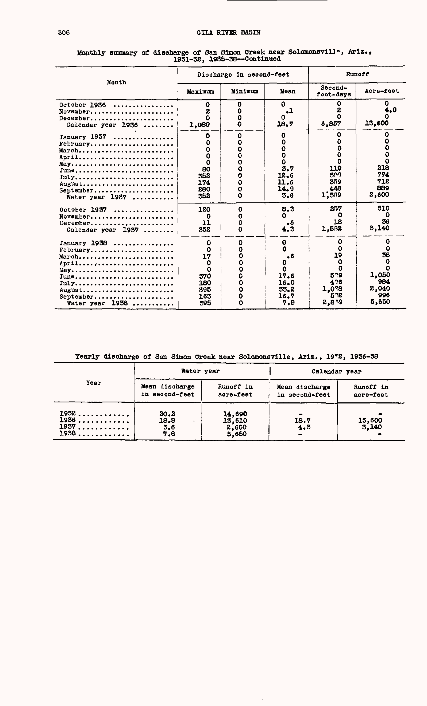

typist unsureReducto reads a different numberbothchanged by you Click any cell and type to correct it; it saves when you leave the cell. Hover a coloured cell for details.
Table 1. Monthly summary of discharge of San Simon Creek near Solomonsville, Ariz., 1931-32, 1935-38--Continued| Month | Discharge in second-feet | Discharge in second-feet | Discharge in second-feet | Runoff | Runoff |
| Maximum | Minimum | Mean | Second-foot-days | Acre-feet | |
| October 1936 | 0 | 0 | 0 | 0 | 0 |
| November | 2 | 0 | .1 | 2 | 4.0 |
| December | 0 | 0 | 0 | 0 | 0 |
| Calendar year 1936 | 1,080 | 0 | 18.7 | 6,857 | 13,600 |
| January 1937 | 0 | 0 | 0 | 0 | 0 |
| February | 0 | 0 | 0 | 0 | 0 |
| March | 0 | 0 | 0 | 0 | 0 |
| April | 0 | 0 | 0 | 0 | 0 |
| May | 0 | 0 | 0 | 0 | 0 |
| June | 80 | 0 | 3.7 | 110 | 218 |
| July | 352 | 0 | 12.6 | 390 | 774 |
| August | 174 | 0 | 11.6 | 359 | 712 |
| September | 280 | 0 | 14.9 | 448 | 889 |
| Water year 1937 | 352 | 0 | 3.6 | 1,309 | 2,600 |
| October 1937 | 120 | 0 | 8.3 | 257 | 510 |
| November | 0 | 0 | 0 | 0 | 0 |
| December | 11 | 0 | .6 | 18 | 36 |
| Calendar year 1937 | 352 | 0 | 4.3 | 1,582 | 3,140 |
| January 1938 | 0 | 0 | 0 | 0 | 0 |
| February | 0 | 0 | 0 | 0 | 0 |
| March | 17 | 0 | .6 | 19 | 38 |
| April | 0 | 0 | 0 | 0 | 0 |
| May | 0 | 0 | 0 | 0 | 0 |
| June | 370 | 0 | 17.6 | 529 | 1,050 |
| July | 180 | 0 | 16.0 | 496 | 984 |
| August | 395 | 0 | 33.2 | 1,028 | 2,040 |
| September | 163 | 0 | 16.7 | 502 | 996 |
| Water year 1938 | 395 | 0 | 7.8 | 2,849 | 5,650 |
| Year | Water year | Water year | Calendar year | Calendar year |
| Mean discharge in second-feet | Runoff in acre-feet | Mean discharge in second-feet | Runoff in acre-feet | |
| 1932 | 20.2 | 14,690 | ||
| 1936 | 18.8 | 13,610 | 18.7 | 13,600 |
| 1937 | 3.6 | 2,600 | 4.3 | 3,140 |
| 1938 | 7.8 | 5,650 |